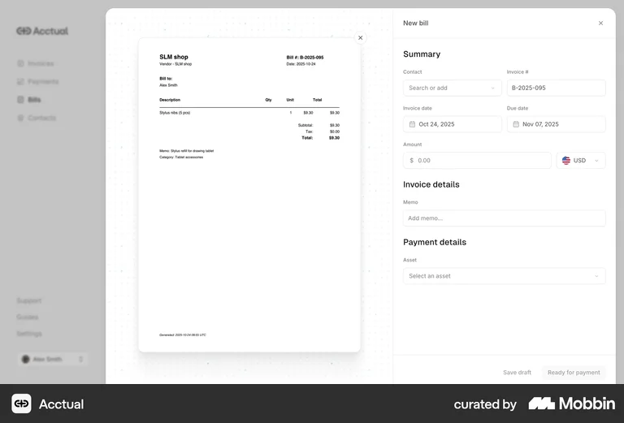
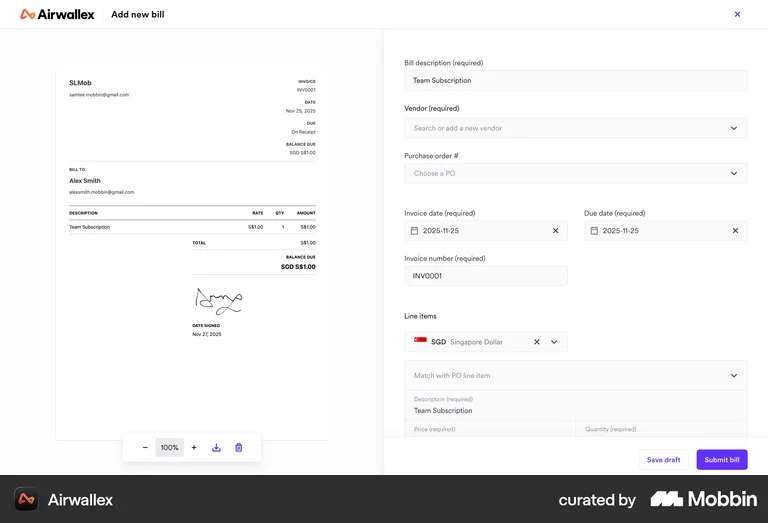
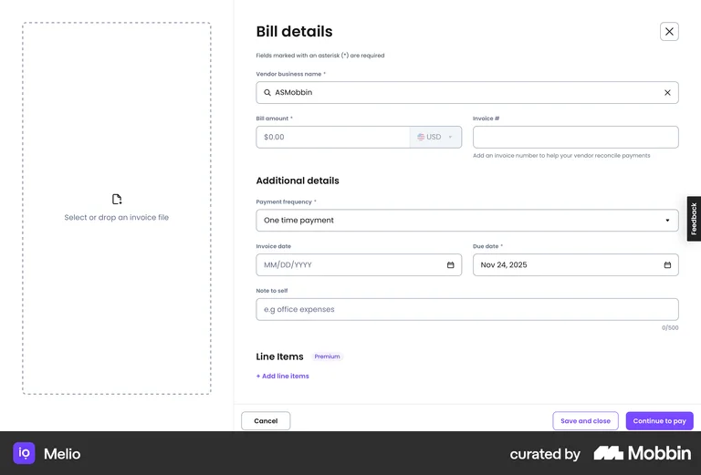
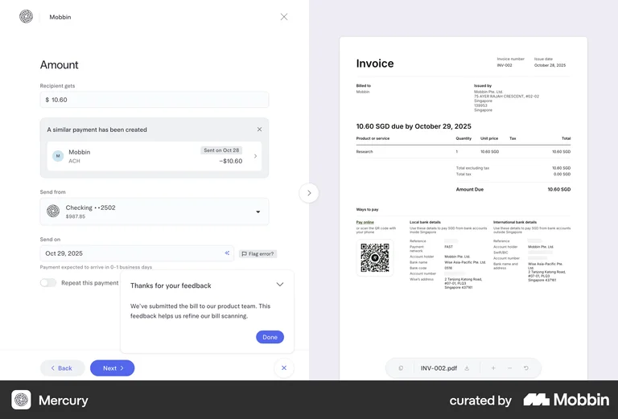

High impactG1 · Capture
The invoice is uploaded but not read
Airwallex, Melio and Acctual all show the invoice PDF beside a form, and the form is still blank. In Acctual the invoice reads $9.30 while the amount field reads $0.00. Airwallex's own Spend page promises AI that removes manual invoice entry, yet its bill form keeps seven required fields for a person to fill.
- Copy-typing drives errors in amounts and due dates
- Line items are skipped (Melio gates them behind Premium)
- Email ingestion exists (Shopify, Acctual) but half the bills land as "Enter missing details"
Best in class: Mercury pre-fills amount and date from the invoice and adds a "Flag error?" control that feeds its bill scanner.
Response: F1 Invoice Autopilot



